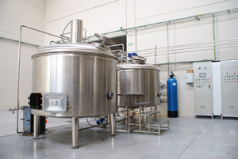

La Primera Cerveza Artesana y Natural de la Sierra de Gredos

Ahora puedes disfrutar de todo el sabor y propiedades de la mejor Cereza Artesanal comprando desde tu Casa

Descubre Nuestra Cerveza, elaborada con la mejor malta y lúpulos cuidadosamente seleccionados.

En nuestra fábrica elaboramos la cerveza artesana Gredos, siguiendo el método tradicional artesa de nuestros abuelos.